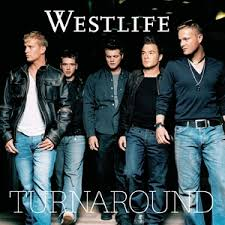

Westlife are an Irish boy band, which was formed 1998 in Sligo, Ireland. They disbanded in 2012 and reunited in 2018. They were originally signed by Simon Cowell in the UK, Clive Davis in the US and managed by Louis Walsh and Sonny Takhar.[3] The group currently consists of Shane Filan, Markus Feehily, Kian Egan, and Nicky Byrne. They have a total of thirteen major album releases, twelve of which are studio albums. Five albums are as a five-piece and eight are as a four-piece. The group rose to fame with their debut international self-titled studio album, Westlife (1999). It was followed by Coast to Coast (2000), World of Our Own (2001), Unbreakable – The Greatest Hits Vol. 1 (2002), and Turnaround (2003), which continued the group's success worldwide. Before the start of their Turnaround Tour in 2004, one of the original members, Brian McFadden, departed from the band. The four remaining members continued as a group to release their cover albums Allow Us to Be Frank (2004) and The Love Album (2006) and the studio albums Face to Face (2005) and Back Home (2007). After a hiatus of studio recording for almost one year in 2008, they regrouped and released the studio albums Where We Are (2009), and Gravity (2010), and the compilation album Greatest Hits (2011). After eight years, the quartet group released their eleventh studio album, Spectrum, in 2019.
They generated singles such as "Swear It Again", "If I Let You Go", "Flying Without Wings", "I Have a Dream", "Seasons in the Sun", "Fool Again", "My Love", "What Makes a Man", "I Lay My Love On You", "Uptown Girl", "Unbreakable", "When You're Looking Like That", "Queen of My Heart", "Mandy", "Tonight", "Hey Whatever", "You Raise Me Up", "Bop Bop Baby", "The Rose", and "World of Our Own". 19 out their 29 singles as lead artist and as featured artist received UK certifications from 1999 to 2019, 17 out of 29 singles from 1999 to 2009 reached the top 2 on the UK Singles Chart. They are the top act with most Number 1 debuts on the UK Singles Chart, with all 14 of their chart-toppers landing there in their first week.[4] They have the second most certifications for a boy band in the UK Singles Chart after Take That and the most singles certifications for a pop band on the UK number one singles artists chart since The Beatles.